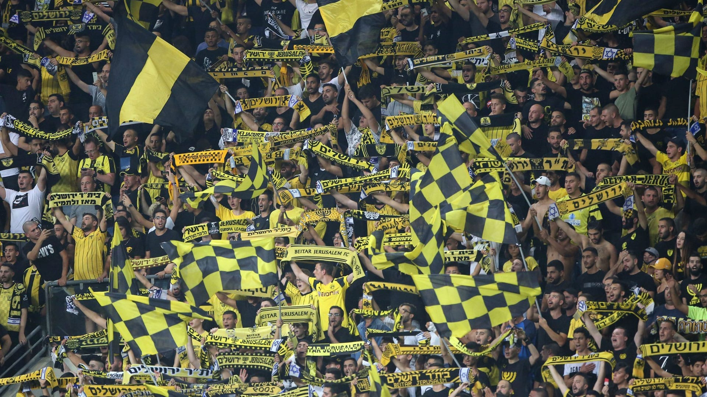

The Championships of Beitar Jerusalem
Beitar Jerusalem team won a historic double in the 2007-2008 season
In the 2006/2007 season, the team won the championship under the guidance of coach Yossi Mizrahi, who replaced Osvaldo Ardiles at the beginning of the season.
Despite winning the championship, Mizrahi's contract was not extended.
At the beginning of 2007/2008, Yitzhak Shom was appointed as אcoach and Giora Spiegel as manager and professional consultant.
In addition, goalkeeper Itzik Kornfein was appointed general manager of the club, who retired from active play.
The result was quite successful and for the first time in the Gaydamak era, the coach was not replaced throughout the season.
Copenhagen had our first qualifiers, but later its dominance in the Premier League was established.
At the end of the season after a different dramatic cup final game in which the Hapoel Tel Aviv won a duel with penalty kicks after 0-0 at the end of 120 minutes, the team managed to win a historic double for the club and establish the footage as the strongest team in Israel.
